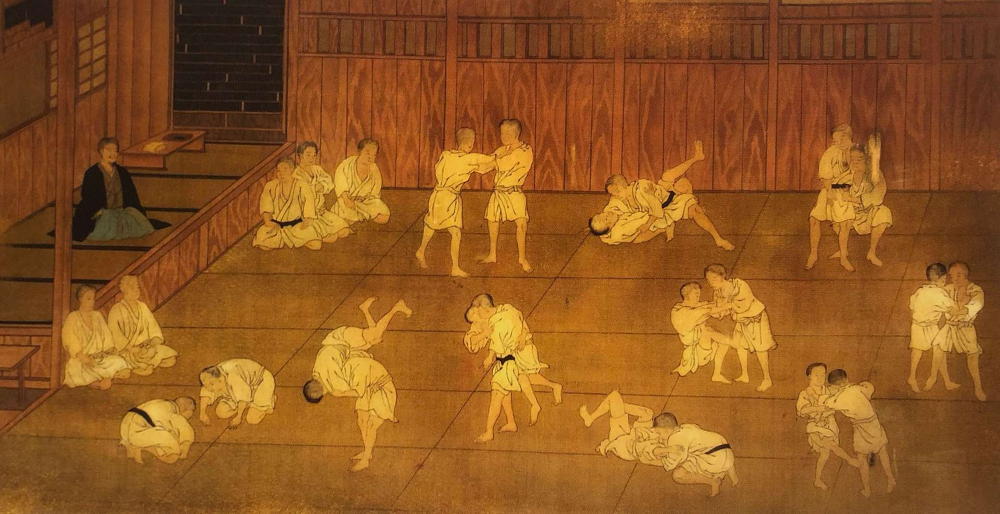

Origins
Judo was developed by Jigoro Kano, who combined techniques from traditional jujutsu schools into a system focused on education, discipline, and physical fitness.
Evolution
From its founding at the Kodokan in Tokyo, judo spread globally and became an Olympic sport in 1964. It continues to evolve with international competition and cultural exchange.
